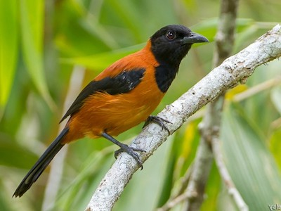
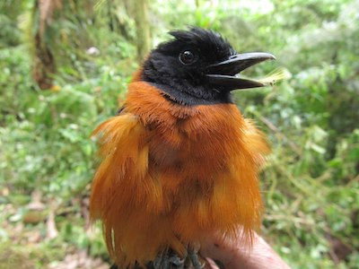

Wow! Based on your answers... You share similarities with the Hooded Pitohui (Pitohui dichrous)

The Hooded Pitohui is a nurturing bird, but if messed with, can be lethal. The Hooded Pitohui exhibits an interesting style of care and raising of their young. They participate in cooperative breeding, in which many individuals help build the nest and feed the young. Their lethality comes from their toxicity! They are the only known toxic bird species, but they are not born toxic. They gain their toxic feathers and skin from eating beetles of the genus Choresine, these beetles contain high levels of batrachotoxins and the Pitohui is able to negate the effects of the toxin when ingesting it and repurposing it for its own self-defense. Like the Hooded Pitohui, you are a very nurturing and intelligent person and if you need to defend yourself or your loved ones, you have the means to do so, not just through strength, but intelligence.
Click on Ceasar to Restart!